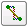
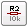
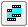

Using EAGLE: Board Layout
{kind=link}
Previously on Using EAGLE
EAGLE’s board designer is where a good portion of the magic happens. It’s here where the dimensions of the board come together, parts are arranged, and connected by copper traces. In the board editor, the conceptual, idealized schematic you’ve designed becomes a precisely dimensioned and routed PCB.
In this tutorial we’ll cover every step in EAGLE PCB design: from placing parts, to routing them, to generating gerber files to send to a fab house. We’ll also go over the basics of EAGLE’s board editor, beginning with explaining how the layers in EAGLE match up to the layers of a PCB.
Create a Board From Schematic
Before starting this tutorial, read through and follow along with the Using EAGLE: Schematic tutorial (not to mention the Setting Up EAGLE tutorial before that). The schematic designed in that tutorial will be used as the foundation for the PCB designed here.

The schematic from previous tutorial, complete with an ATmega328P, barrel jack connector, LEDs, resistors, capacitors, and connectors.
To switch from the schematic editor to the related board, simply click the Generate/Switch to Board command – (on the top toolbar, or under the File menu) – which should prompt a new, board editor window to open. All of the parts you added from the schematic should be there, stacked on top of eachother, ready to be placed and routed.
{kind=link}
The board and schematic editors share a few similarities, but, for the most part, they’re completely different animals. On the next page, we’ll look at the colored layers of the board editor, and see how they compare to the actual layers of a PCB.
Layers Overview
PCB composition is all about layering one material over another. The thickest, middle part of the board is a insulating substrate (usually FR4). On either side of that is a thin layer of copper, where our electric signals pass through. To insulate and protect the copper layers, we cover them with a thin layer of lacquer-like soldermask, which is what gives the PCB color (green, red, blue, etc.). Finally, to top it all off, we add a layer of ink-like silkscreen, which can add text and logos to the PCB.
{kind=link}
The layers of a double-sided PCB (image from the PCB Basics tutorial).
EAGLE’s Layers
The EAGLE board designer has layers just like an actual PCB, and they overlap too. We use a palette of colors to represent the different layers. Here are the layers you’ll be working with in the board designer:
| Color | Layer Name | Layer Number | Layer Purpose |
|---|---|---|---|
| Top | 1 | Top layer of copper | |
| Bottom | 16 | Bottom layer of copper | |
| Pads | 17 | Through-hole pads. Any part of the green circle is exposed copper on both top and bottom sides of the board. | |
| Vias | 18 | Vias. Smaller copper-filled drill holes used to route a signal from top to bottom side. These are usually covered over by soldermask. Also indicates copper on both layers. | |
| Unrouted | 19 | Airwires. Rubber-band-like lines that show which pads need to be connected. | |
| Dimension | 20 | Outline of the board. | |
| tPlace | 21 | Silkscreen printed on the top side of the board. | |
| bPlace | 22 | Silkscreen printed on the bottom side of the board. | |
| tOrigins | 23 | Top origins, which you click to move and manipulate an individual part. | |
| bOrigins | 24 | Origins for parts on the bottom side of the board. | |
| / / Hatch | tStop | 29 | Top stopmask. These define where soldermask should not be applied. |
| \ \ Hatch | bStop | 30 | Absent soldermask on the bottom side of the board. |
| Holes | 45 | Non-conducting (not a via or pad) holes. These are usually drill holes for stand-offs or for special part requirements. | |
| tDocu | 51 | Top documentation layer. Just for reference. This might show the outline of a part, or other useful information. |
To turn any layer off or on, click the “Layer Settings…” button – – and then click a layer’s number to select or de-select it. Before you start routing, make sure the layers above (aside from tStop and bStop) are visible.
Selecting From Overlapping Objects
Here’s one last tip before we get to laying our board out. This is an interface trick that trips a lot of people up. Since the board view is entirely two-dimensional, and different layers are bound to overlap, sometimes you have to do some finagling to select an object when there are others on top of it.
Normally, you use the mouse’s left-click to select an object (whether it’s a trace, via, part, etc.), but when there are two parts overlapping exactly where you’re clicking, EAGLE doesn’t know which one you want to pick up. In cases like that, EAGLE will pick one of the two overlapping objects, and ask if that’s the one you want. If it is, you have to left-click again to confirm. If you were trying to grab one of the other overlapping objects, right-click to cycle to the next part. EAGLE’s status box, in the very bottom-left of the window, provides some helpful information when you’re trying to select a part.
{kind=link}
For example: In the GIF above, a VCC net overlaps another named Reset. We left-click once directly where they overlap, and EAGLE asks us if we meant to select VCC. We right-click to cycle, and it asks us instead if we’d like to select Reset. Right-clicking again cycles back to VCC, and a final left-click selects that as the net we want to move.
Whew! Enough pointers, let’s lay out a PCB!
Arranging the Board
Create a Board From Schematic
If you haven’t already, click the Generate/Switch to Board icon – – in the schematic editor to create a new PCB design based on your schematic:
{kind=link}
The new board file should show all of the parts from your schematic. The gold lines, called airwires, connect between pins and reflect the net connections you made on the schematic. There should also be a faint, light-gray outline of a board dimension to the right of all of the parts.
Our first job in this PCB layout will be arranging the parts, and then minimizing the area of our PCB dimension outline. PCB costs are usually related to the board size, so a smaller board is a cheaper board.
Understanding the Grid
In the schematic editor we never even looked at the grid, but in the board editor it becomes much more important. The grid should be visible in the board editor. You can adjust the granularity of the grid, by clicking on the GRID icon – . A 0.05" grid, and 0.005" alternate grid is a good size for this kind of board.
{kind=link}
EAGLE forces your parts, traces, and other objects to “snap” to the grid defined in the Size box. If you need finer control, hold down ALT on your keyboard to access the alternate grid, which is defined in the Alt box.
Moving Parts
Using the MOVE tool – – you can start to move parts within the dimension box. While you’re moving parts, you can rotate them by either right-clicking or changing the angle in the drop-down box near the top.
The way you arrange your parts has a huge impact on how easy or hard the next step will be. As you’re moving, rotating, and placing parts, there are some factors you should take into consideration:
- Don’t overlap parts: All of your components need some space to breathe. The green via holes need a good amount of clearance between them too. Remember those green rings are exposed copper on both sides of the board, if copper overlaps, streams will cross and short circuits will happen.
- Minimize intersecting airwires: While you move parts, notice how the airwires move with them. Limiting criss-crossing airwires as much as you can will make routing much easier in the long run. While you’re relocating parts, hit the RATSNEST button –
 – to get the airwires to recalculate.
– to get the airwires to recalculate. - Part placement requirements: Some parts may require special consideration during placement. For example, you’ll probably want the insertion point of the barrel jack connector to be facing the edge of the board. And make sure that decoupling capacitor is nice and close to the IC.
- Tighter placement means a smaller and cheaper board, but it also makes routing harder.
Below is an example of how you might lay out your board while considering those factors. We’ve minimized airwire intersections by cleverly placing the LEDs and their current-limiting resistors. Some parts are placed where they just have to go (the barrel jack, and decoupling capacitor). And the layout is relatively tight.
{kind=link}
Note: The tNames layer (which isn’t visible by default) was turned on to help identify which part is which.
Adjusting the Dimension Layer
Now that the parts are placed, we’re starting to get a better idea of how the board will look. Now we just need to fix our dimension outline. You can either move the dimensions lines that are already there, or just start from scratch. Use the DELETE tool – – to erase all four of the dimension lines.
Then use the WIRE tool – ( – to draw a new outline. Before you draw anything though, go up to the options bar and set the layer to 20 Dimension. Also up there, you may want to turn down the width a bit (we usually set it to 0.008").
{kind=link}
Then, starting at the origin, draw a box around your parts. Don’t intersect the dimension layer with any holes, or they’ll be cut off! Make sure you end where you started.
{kind=link}
That’s a fine start. With the parts laid out, and the dimension adjusted, we’re ready to start routing some copper!
Routing the Board
Routing is the most fun part of this entire process. It’s like solving a puzzle! Our job will be turning each of those gold airwires into top or bottom copper traces. At the same time, you also have to make sure not to overlap two different signals.
Using the Route Tool
To draw all of our copper traces, we’ll use the ROUTE tool– – (not the WIRE tool!). After selecting the tool, there are a few options to consider on the toolbar above:
{kind=link}
- Layer: On a 2-layer board like this, you’ll have to choose whether you want to start routing on the top (1) or bottom (16) layer.
- Bend Style: Usually you’ll want to use 45° angles for your routes (wire bend styles 1 and 3), but it can be fun to make loopy traces too.
- Width: This defines how wide your copper will be. Usually 0.01" is a good default size. You shouldn’t go any smaller than 0.007" (or you’ll probably end up paying extra). Wider traces can allow for more current to safely pass through. If you need to supply 1A through a trace, it’d need to be much wider (to find out how much, exactly, use a trace width calculator).
- Via Options: You can also set a few via characteristics here. The shape, diameter, and drill can be set, but usually the defaults (round, auto, and 0.02" respectively) are perfect.
With those all set, you start a route by left-clicking on a pin where a airwire terminates. The airwire, and connected pins will “glow”, and a red or blue line will start on the pin. You finish the trace by left-clicking again on top of the other pin the airwire connects to. Between the pins, you can left-click as much as you need to “glue” a trace down.
{kind=link}
While routing it’s important to avoid two cases of overlap: copper over vias, and copper over copper. Remember that all of these copper traces are basically bare wire. If two signals overlap, they’ll short out, and neither will do what it’s supposed to.
{kind=link}
If traces do cross each other, make sure they do so on opposite sides of the board. It’s perfectly acceptable for a trace on the top side to intersect with one on the bottom. That’s why there are two layers!
If you need more precise control over your routes, you can hold down the ALT key on your keyboard to access the alternate grid. By default, this is set to be a much more fine 0.005".
Placing Vias
Vias are really tiny drill holes that are filled with copper. We use them mid-route to move a trace from one side of the board to the other.
To place a via mid-route, first left-click in the black ether between pins to “glue” your trace down. Then you can either change the layer manually in the options bar up top, or click your middle mouse button to swap sides. And continue routing to your destination. EAGLE will automatically add a via for you.
{kind=link}
Route Clearance
Make sure you leave enough space between two different signal traces. PCB fabricators should have clearly defied minimum widths that they’ll allow between traces – probably around 0.006" for standard boards. As a good rule-of-thumb, if you don’t have enough space between two traces to fit another (not saying you should), they’re too close together.
Ripping Up Traces
Much like the WIRE tool isn’t actually used to make wires, the DELETE tool can’t actually be used to delete traces. If you need to go back and re-work a route, use the RIPUP tool –  – to remove traces. This tool turns routed traces back into airwires.
You can also use UNDO and REDO to back/forward-track.
Route Away!
That’s about all the simple rules there are. Go have the time of your life solving the routing puzzle! You may want to start on the closest, easiest traces first. Or, you might want to route the important signals – like power and ground – first. Here’s an example of a fully-routed board:
{kind=link}
See if you can do a better job than that! Make your board smaller. Or try to avoid using any vias.
After you feel like the routing is done, there are a few checks we can do to make sure it’s 100% complete. We’ll cover those on the next page.
Or Use the Autorouter (Cheater!)
If you’re short on time, or having trouble solving the routing puzzle, you can try loading up EAGLE’s Autorouter – – to see if it can finish the job. Open up the autorouter, don’t worry about these other tabs for now, just click OK.
{kind=link}
If you don’t like the job the autorouter did, you can quickly hit Undo to go back to where you were.
The autorouter won’t always be able to finish the job, so it’s still important to understand how to manually route pads (plus manual routes look much better). After running the autorouter, check the bottom-left status box to see how it did. If it says anything other than “OptimizeN: 100% finished”, you’ve still got some work to do. If your autorouter couldn’t finish the job, try turning Routing Grid down from 50mil 10mil.
There are tons of optimizations and settings to be made in the autorouter. If you want to dig deeper into the subject, consider checking out EAGLE’s manual where an entire chapter is devoted to it.
Checking for Errors
Before we package the design up and send it off to the fabrication house, there are a few tools we can use to check our design for errors.
Ratsnest – Nothing To Do!
The first check is to make sure you’ve actually routed all of the nets in your schematic. To do this, hit the RATSNEST icon – – and then immediately check the bottom left status box. If you’ve routed everything, it should say “Ratsnest: Nothing to do!”
{kind=link}
As denoted by the exclamation mark, having “nothing to do” is very exciting. It means you’ve made every route required.
If ratsnest says you have “N airwires” left to route, double check your board for any floating golden lines and route them up. If you’ve looked all over, and can’t find the suspect airwire, try turning off every layer except 19 Unrouted.
Design Rule Check
Once you’re done routing there’s just one more check to be made: the design rule check (DRC). For this step, we recommend you use the SparkFun design rules, which you can download here. To load up the DRC, click the DRC icon – – which opens up this dialog:
{kind=link}
The tabs in this view (Layers, Clearance, Distance, etc.) help define a huge set of design rules which your layout needs to pass. These rules define things like minimum clearance distances, or trace widths, or drill hole sizes…all sorts of fun stuff. Instead of setting each of those manually, you can load up a set of design rules using a DRU file. To do this, hit Load… and select the SparkFun.dru file you just downloaded. The title of the window will change to “DRC (SparkFun)”, and some values on the other tabs will change. Then hit the Check button.
Again, look down to the bottom-left of the editor. If your design is perfect, you should see “DRC: No errors.” But if things didn’t go so swell, you’ll instead be greeted by the dreaded “DRC Errors” window. The error window lists all of the open errors, and it also highlights where the error is. Click on any of the errors listed, and EAGLE will point to the offender.
{kind=link}
There are all sorts of errors that the DRC can find, but here are some of the most common:
- Clearance: A trace is too close to either another trace or a via. You’ll probably have to nudge the trace around using the MOVE tool.
- Overlap: Two different signal traces are overlapping each other. This will create a short if it’s not fixed. You might have to RIPUP one trace, and try routing it on the other side of the board. Or find a new way for it to reach its destination.
- Dimension: A trace, pad, or via is intersecting with (or too close to) a dimension line. If this isn’t fixed that part of the board will just be cut off.
Once you’ve seen both “No airwires left!” and “DRC: No errors.”, your board is ready to send to the fab house, which means it’s time to generate some gerber files. Before we do that though, let’s add some finishing touches to the design.
Finishing Touches
Adding Copper Pours
Copper pours are usually a great addition to a board. They look professional and they actually have a good reason for existing. Not to mention they make routing much easier. Usually, when you’re adding a copper pour it’s for the ground signal. So let’s add some ground pours to the design.
Start by selecting the POLYGON tool – . Then (as usual), you’ll need to adjust some settings in the options bar. Select the top copper (1) layer. Also adjust the Isolate setting which defines how much clearance the ground pour gives other signals, 0.012" for this is usually good.
{kind=link}
Next, draw a set of lines just like you did the dimension box. In fact, just draw right on top of the dimension lines. Start drawing at the origin, trace all the way around, and finish back at the same spot. A dotted red box should appear around the dimension of the board.
After you’ve drawn the polygon, you have to connect it to a net using the NAME tool – . This works just like naming nets on a schematic. Use that tool on the dotted red line you just created, and in the dialog that pops up type “GND”. (Click here to see an animated GIF of the entire process.)
{kind=link}
The last step is to hit ratsnest, to watch the glorious red pour fill just about the entire area of your board. You’ll probably hate me for telling you this now, but adding ground pours to your design at the very beginning (after placing parts, before routing) makes manual routing much easier.
You can (and probably should) have ground pours on both sides of the board, so follow the same set of steps on the bottom layer.
{kind=link}
It can be hard to tell what is and isn’t connected to the ground pour. If you see a black gap separating a pad and the pour, there is no connection. If you see some traces forming a “target” over the pad, there is a connection from the pour to that pad.
If you ever want to hide the polygon (it’s hard to see other stuff with it on there), use the RIPUP tool on the polygon border you just drew. Don’t worry, the polygon is still there, just hit ratsnest to bring it back.
Adding Silkscreen
Although it has no real effect on the circuit your designing, silkscreen can be a critical part of the PCB design. You want it to look good, right? Some silkscreen – like part outlines – is automatically placed on the board because it’s a piece of the part. We can manually add other information, like labels, logos, and names. A variety of draw tools – wire (), text (), circle (), arc (), rectangle (), and polygon () – can be used to draw on the silkscreen layer (tPlace for top, bPlace for bottom).
Have fun and explore with these tools. You could add labels for the headers, or values for the resistors, or even create a nifty logo.
{kind=link}
The draw tools are a bit limited, but that doesn’t mean you can’t make it look good!
Generating Gerbers
When you’ve finalized your design, the last step before sending it off to the fab house is to generate gerber files. Gerber files are kind of a “universal language” for PCB designs. EAGLE is far from the only PCB CAD software out there, and its design files are nothing like those of Orcad or Altium. Fab houses can’t possibly support every piece of software out there, so we send them the gerber files instead.
Gerber files – note the plurality – each describe single layers of the PCB. One gerber might describe the silkscreen, while another defines where the top copper is. In all, we’ll generate seven gerber files to send to the fab house.
CAM Processor
Before we get too much further, you’ll need to download another definition file: SparkFun’s CAM file.
Then, load up the CAM processor by clicking the CAM icon –  – which will open up this window:

From here, go to the File menu, then go Open > Job…. In the file browser that opens, select the sfe-gerb274x.cam file that you just downloaded. Now the CAM processor window should have a series of tabs: “Top Copper”, “Bottom Copper”, “Top Silkscreen”, etc. Each of these tabs define how to create one of the gerber files. Now all you have to do is click Process Job. If you haven’t saved recently, it’ll prompt you to.
The gerber generation process should be pretty quick. Once it’s run its course, have a look in your project directory, which should have loads of new files in it. In addition to the board (BRD) and schematic (SCH) files, there should now be a .dri, .GBL, .GBO, .GBS, .GML, .gpi, .GTO, .GTP, .GTS, and a .TXT. Meet the Gerbers!
| Gerber File | Extension |
|---|---|
| Bottom Copper | GBL |
| Bottom Silkscreen | GBO |
| Bottom Soldermask | GBS |
| Top Copper | GTL |
| Top Silkscreen | GTO |
| Top Soldermask | GTS |
| Drill File | TXT |
| Drill Station Info File | dri |
| Photoplotter Info File | gpi |
| Mill Layer | GML |
| Top Paste | GTP |
Picking a PCB Manufacturer
There are PCB manufacturers all over the world, so you shouldn’t have any trouble finding one. OSH Park is pretty great for low-volume, high-quality PCBs (plus, they’re purple!). Advanced Circuits is awesomely fast. Gold Phoenix is cheap. We could go on and on, but Ladyada has a great list over on her website.
Before they fabricate the board, the fab house will usually run a quick design for manufacturability (DFM) check, and let you know if something on your design will cause in a problem.
Delivering the Gerbers
The process of sending gerber files varies by fab house. Most will ask you to send them a zipped folder of select files. Which gerber files? Check with your fab house again (e.g. Advanced Circuits and OSH Park’s guidelines), but usually you want to send them GTL, GBL, GTS, GBS, GTO, GBO and the TXT files. The GTP file isn’t necessary for the PCB fabrication, but (if your design had SMD parts) it can be used to create a stencil.
{kind=link}
So zip those gerbers up. Play the waiting game. And get ready to assemble your very own PCB!
Resources and Going Further
If you’d like to check out the reference design we did in this tutorial, you can download them here. That also includes the gerber files, and all EAGLE scripts used in this tutorial.
Going Further
You’ve taken your first step towards being a PCB designer, but there’s still plenty to learn. If you need a break from reading, check out this According to Pete video, where the Dokter goes over some of the more general concepts of PCB layout:
If you’d like to take the PCB layout thing up a notch, give these tutorials a try:
- How to Create SMD Footprints – If you want to create unique parts in a library, check out this tutorial.
- How to Create SMD PCBs – This is a more advanced and fast-paced EAGLE tutorial. In this one, we focus on laying out a more complex, surface-mount (SMD) design.
- Making Custom Footprints in EAGLE – Another footprint-making tutorial. This one details a unique process for making a custom 1:1 footprint.
If you’d like to share your PCB creations with the world, check out these tutorials: